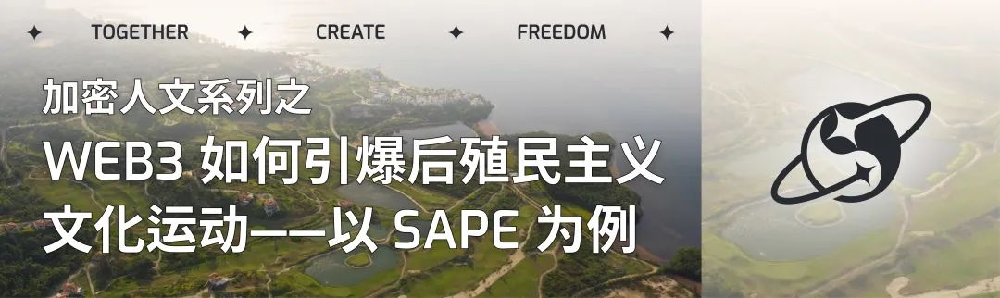
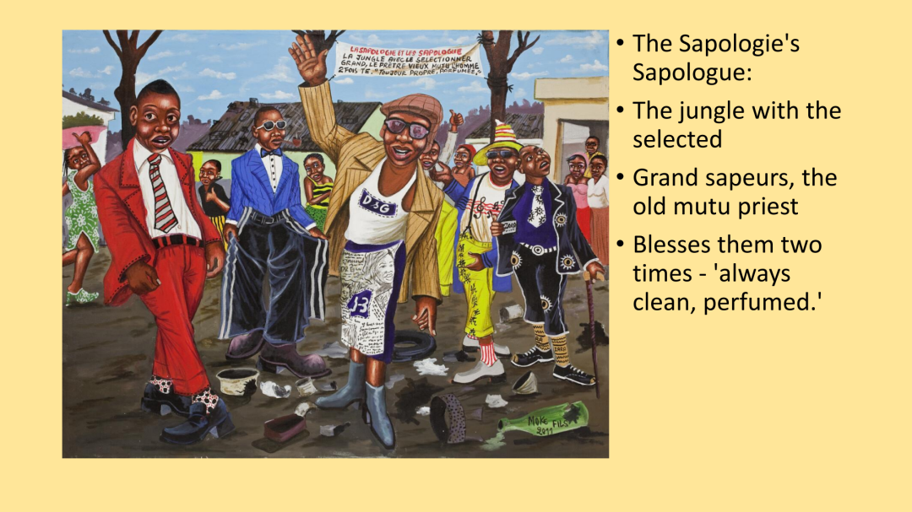
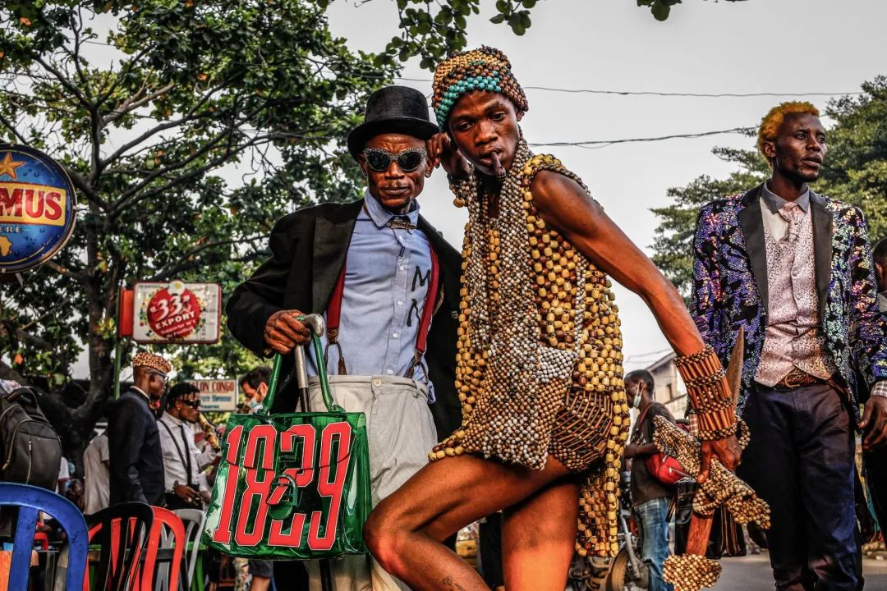
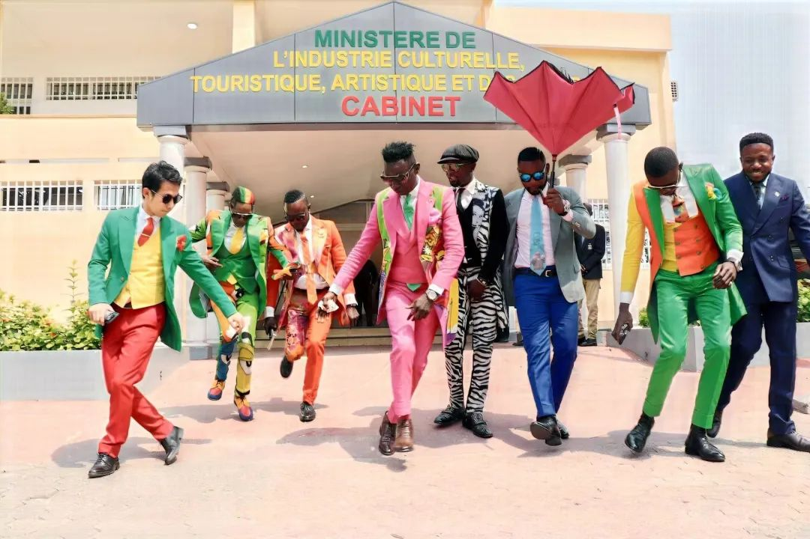

后殖民主义：殖民主义的逆转；
殖民主义的逆转：剥夺殖民者“感知”、“理解”、“了解”世界的理论权力；
理论权力：智力和语言，社会和经济。
后殖民主义是1970至1980年代产生的一种思潮和学术理论，主要目的是反思殖民主义，特别强调文化、知识领域内对殖民主义、新殖民主义、西方中心主义等现象的反思与批判。
—— “Postcolonialism 后殖民主义” Wikipedia
SAPE: 呼之欲出的后殖民力量
SAPE 萨普运动的全称是 Société des Ambianceurs et des Personnes Élégantes，直译成中文是 “优雅人士与氛围制造者协会”，这是一群生活在资本贫瘠的南方地区，但是穿着极为考究和体面的一群人，不仅是穿着考究，这些人的个人卫生和行为举止都是与周围人有显著差别的，SAPE 运动不仅是对精致着装的追求，更是刚果人民在殖民压迫、独裁统治和全球化变迁中的文化回应。从其雏形到当代，SAPE 一直是全球南方人民通过时尚表达主体性、对抗西方中心叙事的象征。
刚果花花公子？老克勒？都不是
提到外部环境凋敝下的优雅与体面，我们会想到上海的老克勒，老克勒是一群坚守优雅做派的老上海，他们在收缩环境下仍然保持外在的甚至是精神上的体面，像是上海的一道社会景观，这和 SAPE 是有共通的，SAPE 也是一道很美丽的社会景观，也是一群人对精神追求的外化，从重塑自己的外在形象开始。
但老克勒与 sapeurs 有着极为本质的区别！老克勒是收缩的，是向内聚拢的，存在于老年群体中，他们在遗世独立，在坚守，只存在于历史中，而 SAPE 是扩张的，是向外扩散的，存在于想要通过独特文化来寻找自己文化认同/经济主体性的任何人！
同是对优雅和体面的精神追求，SAPE 为何能具备扩张性，SAPE 为何能吸引年轻人，SAPE 为何能吸引刚果社会全阶层的人（虽然参与者来自全社会阶层，但 SAPE 文化在刚果仍然属于小众），这文化独特在哪里？
SAPE 运动的精神源头可以追溯到殖民时期。当时的欧洲殖民者以服饰作为身份象征，规定本地人民必须按照西方标准穿衣，强化欧洲中心的等级秩序。与此同时，殖民者又将非洲人的传统“裸露”形象视作野蛮的象征，形成对非洲文化的系统性贬低。
在这种语境下，布拉柴维尔的社会活动家 André Matswa 以穿着巴黎最时髦的服饰示人，成为反抗殖民统治的一种象征。他在 1920 年代的巴黎，与来自加勒比、美国及其他非洲国家的黑人活动家交往密切，一同倡导政治解放和平等权利。他的举动挑战了殖民者对“文明”与“野蛮”的刻板二元对立，被认为是刚果最早通过时尚挑战殖民统治的人之一，为 SAPE 文化奠定了思想基础。
SAPE 运动起源于上世纪五十年代的布拉柴维尔，起源于刚果(布)独立之初的一群退伍老兵，他们来自法国的外籍军团，带来了殖民者的时尚穿搭和生活习惯，以其独特的着装风格行走在布拉柴维尔 Bacongo 街区的街头，这迅速吸引了布拉柴维尔的年轻人，这些年轻人受到了巴黎第六区圣日耳曼（1940-1950 年代欧洲重要的知识与文化中心，存在主义的摇篮）的启发，成立了“存在主义俱乐部” (Existentialistes) 和“年轻先驱俱乐部” (Club des jeunes premiers, 简称 JP)，他们以先锋的精神注入独特的穿搭品味，迅速将 SAPE 的服饰风格作为对平凡与荒谬的超越，流行开来。
这些卓越的年轻人是彼时布拉柴维尔的足球场、酒吧、舞厅和其他社交活动场合的典范，SAPE 成为一种对优雅的崇拜，仿佛一种准宗教信仰，独立时期的政治家们也以 SAPE 的穿搭风格为风尚，此为 SAPE 之起源，刚果青年的存在主义之魂。
02.蒙博托：优雅的泯灭，SAPE 的淬炼（1960s ~ 2000s）
在刚果（金沙萨）独裁者 蒙博托·塞塞·塞科 的统治下，国家实施了 扎伊尔化（Zaïrianisation）政策，以消除殖民影响、塑造所谓的“本土身份”。这一政策规定人民必须穿着蒙博托设计的 abacost（一种受中山装影响的“传统服饰”），并剃光头或剪短发，全面禁止西方服饰。金沙萨的 SAPE 文化因此遭到严厉打压，许多 sapeurs 被迫转入地下，承受政治高压的同时，也积累了更强烈的文化渴求。
不过蒙博托并不能直接影响到对岸的首都，布拉柴维尔，于是布拉柴维尔的 sapeurs 在不面临禁止压力的情况下逐渐变得温和，比起品牌的奢华和价格的高昂，更在意穿搭和服饰本身，而金沙萨的 sapeurs 则相对更在意品牌和价格。
在此期间，刚果音乐家 Papa Wemba （被称为“现代 SAPE 之父”）提出了 SAPE 运动的政治化解读，将其定义为“对贫困和政治忧郁的反叛”。一位名叫 Colonel Jagger 的 sapeur 甚至在军队的威胁下仍然坚持穿着西装（让人想起马克吕布的“枪炮与玫瑰”，但对比要更强烈），强调 SAPE 是“创造属于自己的世界”的方式。
Colonel Jagger 讲述 SAPE 的目的：目的是超越欧洲的风格观念，拒绝将非洲人简化为“野蛮人”，在与这些 二元对立的斗争中，既反对这些二元化的框架，又反对蒙博托倡导的“正宗”理念。
在 zaïrianization 时代，当时的 sapeurs 会穿着西装去音乐会，明知自己会 因为这样做而遭到军队的毒打。
“有一个世界，你不能在街上大喊大叫，那里让你窒息，因为没有喘息的 空间。”
“我没有武器，所以我创造了一个属于自己的世界。”
这种在独裁高压下仍然坚守优雅的姿态，使 SAPE 运动转进地下继续优雅，并且进入了更为激进的阶段，成为反抗体制化压迫的象征。

所以 SAPE 是迄今已存在五十年的 Intentional Community
SAPE 的资金筹集：“这不是钱的问题， 而是品味的问题。”
这种将财富与品味相区分的说法似乎有些矛盾，考虑到 sapeurs 依赖设计师服饰来表达他们的品味；然而，这突显了在像这样的 环境中，时尚所具备的自由元素，使其变得如此有吸引力。
Sape 不仅仅提供了一种身份，或者重新配置身份，或者提供交叉 性身份；它物化了一种替代身份。
例：一位城市画家悄悄回到家中，穿着脏兮兮的工作服，不久后，他穿上挺括的西装和领带，在尘土飞扬的街头舞动，迎接行人的赞叹声。
03.生活的胜利，SAPE 的涅槃（2000s ~ Now）
蒙博托死于 1997 年，第二次刚果战争随之摧毁了人们最后的生活，一名 sapeur 将衣物，鞋子，领带，饰品，深埋至地下，在若干年的内战后挖出，发现这些精美的服饰因为高温，已与泥土融在了一起，恍惚间这名 sapeur 觉得这就像是曾经的自己被埋葬在了地下一样，他意识到自己也随着内战的结束，涅槃重生。
SAPE 也脱去了一层皮，迎来了自己的涅槃：和平让几近消失的 SAPE 重新出现在刚果大地上。然而，随着消费主义的全球扩张，关于 SAPE 的宣传则逐渐偏离了最初的精神内核，偏离了反叛本身。Guinness 广告和 Solange 音乐视频等国际曝光虽强化了视觉符号，但忽略了历史语境，似乎 SAPE 就只是关于对美好生活的一个象征这么简单。这种行为大大弱化了其历史背景与政治意涵，弱化了 SAPE 的反叛精神，这是南方人民需要特别注意的，SAPE 的主体性和解释权需要掌握在自己手中。

La Sape 展示了在日常生活中，通过象征性的表现，如何缓解结构性失衡，La Sape 像是一个想象的共同体，超越了真实共同体的限制。
这名 sapeur 穿戴着带有浓厚蒙博托时代元素的服饰，包括蒙博托风格的豹纹帽子、相似中山装风格的黑色制服（蒙博托时代规定的民族服装），以及戏谑意味的豹纹蝴蝶结（蒙博托很偏爱豹纹元素），这不只是戏仿与颠覆，这是对身份与权力的重构，他眼中带着迷茫的坚定，在告诉我们，要从伤痛中获得力量，不能被曾经的阴霾吞噬，要拿起这些伤害过自己的元素，反抗，获取新生。
* 目前的刚果(布)政府正在积极对外宣传 SAPE 文化，希望该文化自发传播，在全球范围获得影响力，半年前有一位来自日本的留学生远赴布拉柴维尔学习 SAPE，得到了高规格的接待和支持，几名远在巴黎的 SAPE 领导者受邀回到布拉柴维尔，与该留学生交流 SAPE。

密码朋克的入世与进击：主权个人的延伸之路
When my identity is revealed by the underlying mechanism of the transaction, I have no privacy. I cannot here selectively reveal myself; I must always reveal myself.
当我的身份信息被交易的基本机制所揭露时，我就没有了隐私。我不能在这里有选择地暴露自己；我必须始终暴露自己。
Therefore, privacy in an open society requires anonymous transaction systems. Until now, cash has been the primary such system.
因此，在一个开放的社会中，隐私需要由匿名交易系统支持。到目前为止，现金一直是此类系统的主流。
An anonymous transaction system is not a secret transaction system. An anonymous system empowers individuals to reveal their identity when desired and only when desired; this is the essence of privacy.
匿名交易系统不是一个秘密交易系统。一个匿名系统使个体可以在且仅在需要时透露他们的身份，这就是隐私的本质。
—— Eric Hughes 1993
密码朋克宣言展示了人类对个体自由、隐私与主权的坚定呼唤，这宣言在加密世界落了地，匿名的交易系统作为系统性的工具，其实可以为网络中的每个个体提供了一种从根本上掌控自我数据和自由的可能性。
对自由和隐私的需求，在全球南方显得尤为迫切。不只是西方中心视角宣传的“腐败的南方政府，滥用权力干预文化创意产业的发展”，那是地缘政治维度的隐私需求，而脱离地缘来到整个互联网中信息传播的角度，西方中心的力量也是全球南方的传播自由与隐私的重要阻碍。
上述两点可以用两个简单例子来很好阐述：
一名 Sapeur 艺术家因遭遇地方官僚体系中的随机索贿、审批不公，常常面临难以负担的行贿成本，难以将自己独特的时尚和文化表达推向国际市场。
在这名 Sapeur 艺术家对外宣传推广自己的作品和背后文化时，会遭遇西方平台的审批和算法筛选，在如今的逆全球化浪潮下很难说来自黑非洲“寻求自身经济/文化主体性”，“反抗西方中心“的文化能够获得公平的资源和市场支持。
密码朋克宣言与 SAPE
SAPE 中的个体艺术家若是没有组成某种形式的联盟/集体，即使该文化作为符号吸引到了注意，也难以通过集体涌现式的产出来持续集中外界的注意力。因为在某个 web2 式的社交平台（Facebook，X）中即使涌现出了 SAPE 相关的 #Tag 热潮（what a big if），SAPE 的推广和商业行为也难以独立持续，sapeurs 创造出的价值难以回馈网络本身，因为商业行为是孤立而分散的，以公司节点或者自媒体节点的形式存在，即使这些节点间涌现了合作，该合作本身也难以逾越平台推送规则的掌控，也难以逾越平台间商业模式的差异性鸿沟。
其实密码朋克宣言中给出的通向自由的解决方案很简单：
When my identity is revealed by the underlying mechanism of the transaction, I have no privacy. I cannot here selectively reveal myself; I must always reveal myself.
当我的身份信息被交易的基本机制所揭露时，我就没有了隐私。我不能在这里有选择地暴露自己；我必须始终暴露自己。
Therefore, privacy in an open society requires anonymous transaction systems. Until now, cash has been the primary such system.
因此，在一个开放的社会中，隐私需要由匿名交易系统支持。到目前为止，现金一直是此类系统的主流。
要突破这些阻碍信息自由沟通的枷锁，要突破这些商业上的阻碍，其实我们不需要形式上很复杂的协作，密码朋克精神指引我们只需要复兴网络上的隐私现金交易。
互联网本应该是一个互联互通的大集市，如今因为巨头的发展，在这个大广场中，物理上遥远距离点对点的现金交易形式被注意力的浪潮边缘化了，非主流化了，我们需要(加速)复兴去中心化的规则和交易模式，使得类似 SAPE 这样的文化能在网络上获得一个相对公平、独立且持续的生存空间。这样的空间将打破各平台间的壁垒为嘈杂无序的集市，哪怕这个空间会证伪 SAPE 叙事的影响力，最重要的，是该空间的本身。
是在更大规模，更非标的 RWA 中，复兴大集市模式的隐私现金交易，从而改变注意力经济和价值分配的现有格局，这件事儿本身。
Web3 作为菌丝，深入 Web2 的巨树根系，消化早已腐烂的实体，打通看似遥远的壁垒
Even laws against cryptography reach only so far as a nation’s border and the arm of its violence. Cryptography will ineluctably spread over the whole globe, and with it the anonymous transactions systems that it makes possible.
即使是针对密码学的法律，也只能触达一个国家用暴力所能及的边界。加密技术将不可避免地在全球范围内传播，随之而来的是：它使匿名交易系统成为可能。
For privacy to be widespread it must be part of a social contract. People must come and together deploy these systems for the common good. Privacy only extends so far as the cooperation of one’s fellows in society.
为了使隐私得到普及，它必须成为社会契约的一部分。人们必须为了共同的利益来共同部署这些系统。隐私只有在社会中伙伴们的合作下才会得到伸张。
We the Cypherpunks seek your questions and your concerns and hope we may engage you so that we do not deceive ourselves. We will not, however, be moved out of our course because some may disagree with our goals.
我们密码朋克（Cypherpunks）寻求你的质疑和关注，并希望我们能与你接触，以使我们不去自欺欺人。然而，我们不会因为有人不同意我们的目标而偏离我们的方向。
—— Eric Hughes 1993
试想一个未来（大部分已经到来了！）：
在未来的 Web2 中，区块链世界相关的一切并不是完全平行于 Web2，在这两个平行世界中，是有着重要的连接的，除了动脉式的交易所入口连接，也有很多毛细血管式的连接，或像街头的一针见效小广告一样简洁且直接，或像街头的涂鸦符号一样独特而抽象，区别就是 Web3 中的地址所涵盖的信息可以远大于一个电话号码，一个 ens 域名所集成的信息维度也远多于一个普通域名，在这个世界里，我们像狗一样行走在 Web2 的一个个大教堂中，穿越一堵堵高墙，但我们会伺机抬腿撒尿，留下自己的信息素（地址和域名），这信息素可以很轻易交换完整的规则，因为这信息素代表着区块链 (Web3) 宇宙的映射，Solana 上 P 小将的画像和 Optimism 上 govNERD 的画像可是截然不同的，但是这天壤之别的名片可以轻易由一个像是电话号码的地址所区分。
区块链世界的映射不只是每个人能通过不同的信息来自由展示某些信息，自由隐藏某些信息，区块链世界的映射还能让我们自由选择要不要在大教堂以外的地方达成交易，或是需要隐私的交流沟通。
（有些时候，一些看似点对点的 Web3 平台也是些大教堂，区分大教堂和菌丝集市并不是只看交易的撮合形式，而是要看目的性的多元化，以及是否 permissionless，最重要的，由自然需求而涌现，而不是高屋建瓴的设计来吸引人们自由地放置欲望）
坐在电脑前 像一条狗 数字世界大草原 信息糊口 飞来一个念头 像时间穿越 我和草原一起 逆天行走 —— 崔健 2021
那么在这样的未来里，区块链世界的信息素会很精炼，精炼到可能只剩下一个标准地址，甚至是域名或者其他抽象的地址，由于隐秩序已经形成，并且人们有自由交流沟通的需求，所以屏蔽这些信息素的 Web2 平台，会被用户摒弃，即使人们通过信息素背后的隐秩序来协调交易会损害大平台的利益。密码朋克的进击为可悲点增加了喘息的空间，那些最贪婪的巨头将被自己的欲望反噬。
居高临下看见 自由的底线 人群被带进 羊群的圈 我如此悬在 颠倒的空间 如同黑洞里的 一条飞狗
—— 崔健 2021
Mass Adoption 应如是，应来自需求，需求涌现应用，应用扩大需求，拓荒者吃螃蟹一般跑通的在大教堂中映射集市的路径，将被无数次地复现，重蹈 BTC 的网络扩张曲线，Web2 世界中自由的底线被如是突破，空间被颠倒，在大教堂之间闲逛的狗，得以飞翔。
逆天行走 持续的瞬间 恐惧的记忆 如满地碎片 天空没有倾斜 人群抬起了头 草原也站起 如海市蜃楼
—— 崔健 2021
从抽象的比喻回到事例，SAPE 运动作为举例的锚点，在市场中最具长期竞争力的并不会是某棵由大树扶持的小树，而是由树的根系传播营养与信息的菌丝，这菌丝的网络就是区块链，菌丝往来的记录就是区块链的账本：具有长期创造力的个体艺术家在大教堂海市蜃楼般的集市中（由 X/Facebook 中传播的 ENS）以点对点的方式达成三次握手四次挥手的交易，SAPE 作为具有强反叛基因的文化符号，天生适合探索如此的市场秩序。
如此的飞 不同于想象 如此的飞 不像鸟一样 如此的飞 上上下下 如此的飞 跌跌撞撞
—— 崔健 2021
SAPE 背后不只是对西方中心主义的抗争，不只是抽象的后殖民主义，SAPE 的目的性是非标的，完全属于 sapeur 和建设者的 RWA，比如被荷兰垄断五十年的非洲本土纺织业，比如被夺取文化主体性的非洲时尚行业，这些 RWA 需求是南方人民一直强烈感受得到的，愿这些需求得以满足，愿密码朋克精神得以解放全球南方被禁锢已久的自由，愿 Web3 能够不只是北方资本的蓄水池，而真真切切成为实现南方需求的武器！
还有一个选择 再往上飞 飞到银河玩宇宙的黑 看准那庞然大物的重心点 回来击穿它的肚脐眼
—— 崔健 2021
引用：
https://www.adiac-congo.com/content/le-saviez-vous-lhistoire-de-la-creation-des-quartiers-bacongo-poto-poto-et-leurs
https://congoinconversation.fondationcarmignac.com/fr/reportages/une-nouvelle-mode-virale-au-congo-raissa-karama-rwizibuka
—